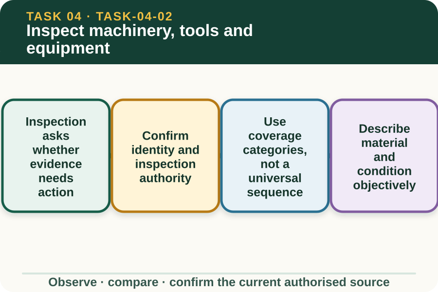
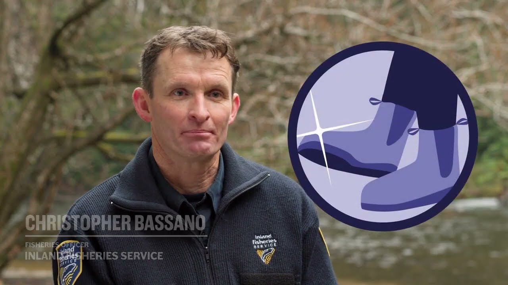

Learning purpose
Use an inspection pattern to find material, damage and access points that need authorised action.
Task 4 · Lesson 2 of 4
Use an inspection pattern to find material, damage and access points that need authorised action.
Learning purpose
Use an inspection pattern to find material, damage and access points that need authorised action.
Success criteria
Learning boundary
Supplementary learning and formative practice only. Current RTO assessment, local procedures and authorised supervision control real work.

Biosecurity inspection looks for observable material or condition that may contribute to movement of a threat. It also checks whether the equipment and inspection information are suitable for the authorised task.
The exact access, immobilisation, cover or guard handling and inspection order are controlled practical procedures. This module uses images and records only; it does not direct a learner to inspect physical machinery independently.
The item, previous use, destination and applicable procedure must be correctly matched. A record for another vehicle or tool does not establish the status of the item in front of the worker.
The learner also needs a confirmed role, supervised setting and safe inspection status. If the equipment's condition or access is not authorised, observation remains external and the issue is referred.
A planning checklist can prompt the learner to consider exterior surfaces, material collection areas, contact points, carried tools and relevant support equipment. These are coverage categories, not instructions to touch, open, reach into or remove anything.
The local procedure decides which areas are inspected, in what order and by whom. A category marked inaccessible or unconfirmed is valuable evidence for referral rather than a reason to improvise access.
Useful descriptions include location, amount in broad terms, appearance and whether the item or area can be confirmed from the authorised viewpoint. They avoid diagnosing a pest, disease or contamination status.
Equipment damage or a missing cover can affect both safety and biosecurity work. Report the visible condition and keep it separate from the material observation so each authorised role can decide what follows.
Fictional worked example
Observed evidence: In a fictional inspection photograph, dry soil and seed-like material are visible on an external lower surface, while a nearby cover appears damaged. Decision and reason: The material and damage both require authorised review, and the image cannot confirm areas behind the cover. Safe action: The learner annotates only the visible locations and reports the inaccessible area and damage. Result: The supervisor decides the equipment status and next controlled action. Next check or record: The learner records visible, inaccessible and referred categories without naming a threat or opening the cover.
An item can look clear from one viewpoint while evidence is missing from another required area or its cleaning history is unavailable. Visual appearance alone does not provide a release decision.
Use the authorised checklist and record to identify what has and has not been confirmed. The final status belongs to the nominated person under the property biosecurity plan.
A useful inspection record links item identity, task context, date, observable findings, areas not confirmed, faults reported and person notified. Consistent terms help another person understand the record without relying on the writer's memory.
Do not paste real asset numbers, property locations, photos or staff details into this site. Fictional practice supports record literacy but does not become an authorised decontamination report or assessment product.

External media loads only after you choose it.
Source-linked video
Why watch: Notice where contamination can cling before applying an authorised inspection pattern.
Watch for: Which surfaces or items could conceal contamination and therefore need an authorised inspection?
Formative practice
Each option explains the consequence. These answers save only on this device.
Written application
Apply and keep a learning record
Use a teacher-supplied fictional or de-identified image. Annotate visible evidence and observation limits only. Do not inspect, touch, open or clean physical equipment for this website activity.
Learning record: A supplementary-learning annotated image and two factual referral statements for teacher feedback.
Lesson responses and the activity are formative learning only. Formal sufficiency and competence remain with the current RTO process.
Next: Build a clean-down work plan.
Source basis: AHCBIO203 Release 1 inspection, equipment-fault reporting and documentation requirements. The unit's physical inspection work remains subject to current workplace procedures, safety controls and supervision and is not taught here.